Android SDK
Reusable Kotlin SDK module for loading, filtering and displaying in-app notifications.
Android In-App Notifications SDK
NotifyFlow lets Android apps display dynamic Popup and Banner messages without releasing a new app version. Campaigns are configured from a web portal and delivered through a backend with server-side targeting, A/B Testing, efficient analytics and cache fallback.
NotifyFlow is a complete SDK ecosystem: Android library, demo app, backend server, MongoDB database and React admin portal.
Reusable Kotlin SDK module for loading, filtering and displaying in-app notifications.
React dashboard for creating messages, configuring targeting and viewing analytics.
Node.js and Express REST API that connects the portal, SDK and MongoDB Atlas with server-side filtering.
Efficient aggregated counters in MessageStats for impressions, clicks, CTR, country and variant breakdowns.
NotifyFlow is useful for Android apps that need to communicate with users after the app is already released.
Show promotions, discounts, free shipping campaigns and cart reminders.
Announce new features, onboarding tips and important workflow updates.
Display course announcements, reminders, exam updates and targeted messages by region.
Test upgrade prompts, feature announcements and benefit messages using A/B Testing.
Watch NotifyFlow in action through a project demo and a short promotional video.
A short walkthrough of the main NotifyFlow flow: managing messages in the portal, displaying notifications in the Android demo app, and viewing Analytics and A/B Testing results.
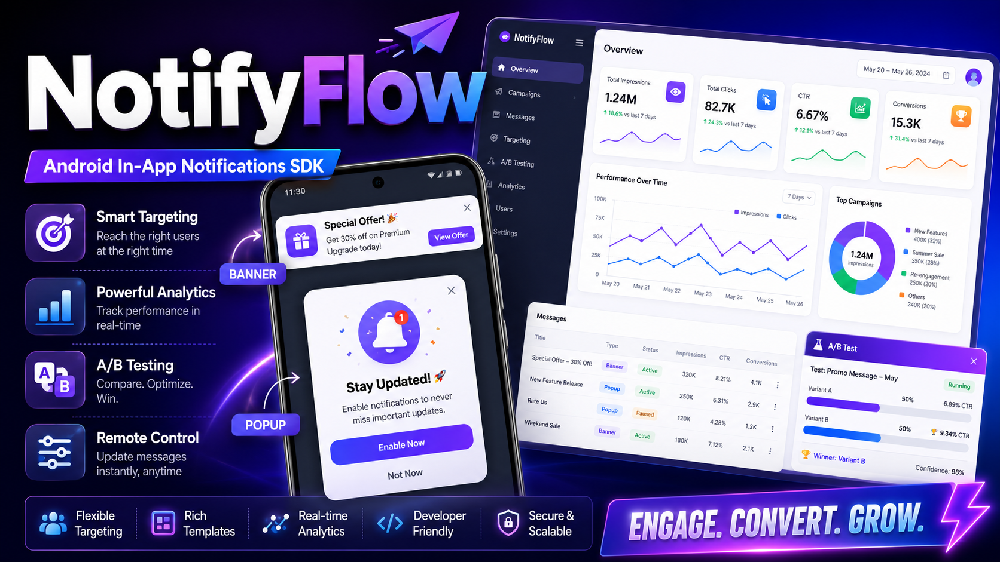
Watch on YouTubeA short promotional video presenting the problem NotifyFlow solves, the SDK value for Android developers, and the main product capabilities.
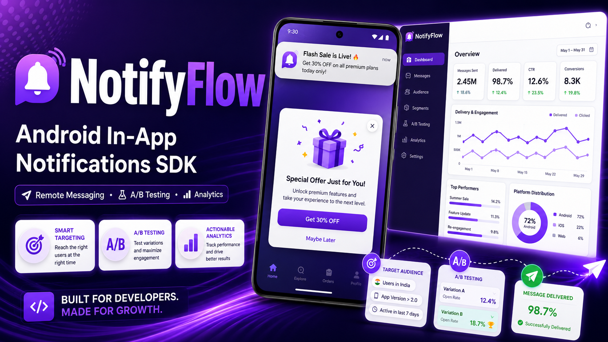
Watch on YouTube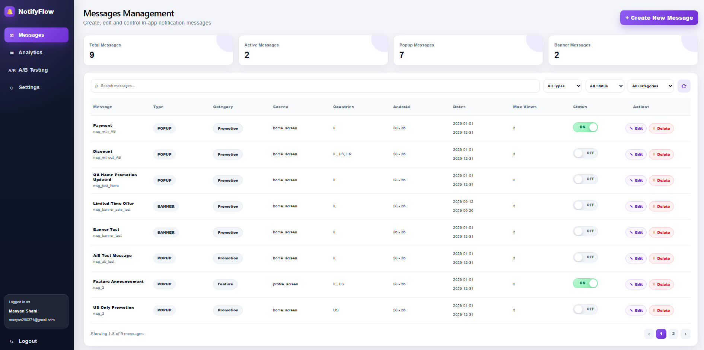
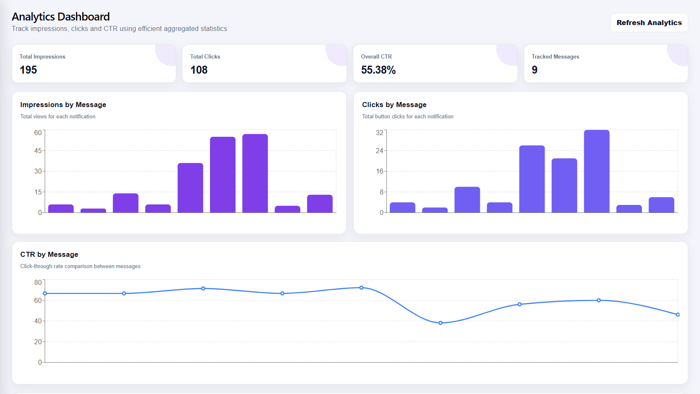
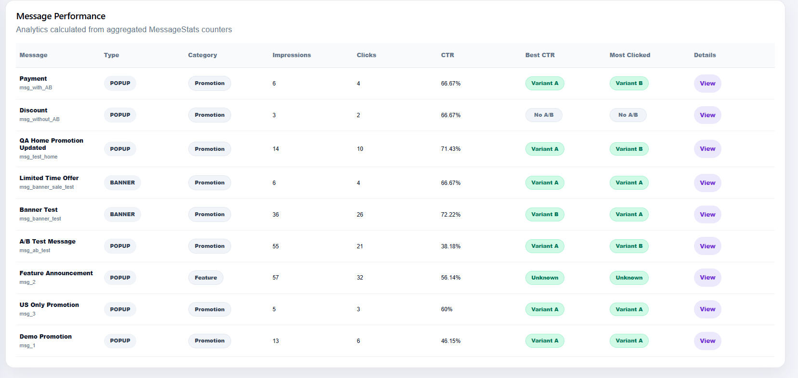
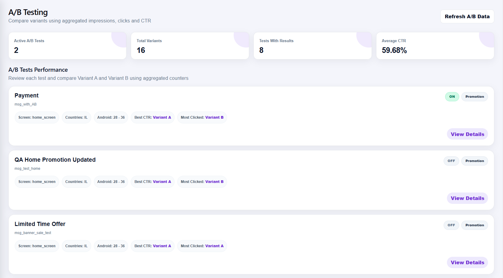
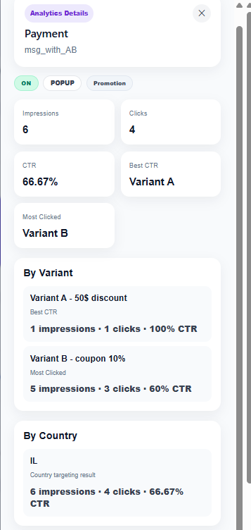
Impressions, clicks, CTR and variant summary.
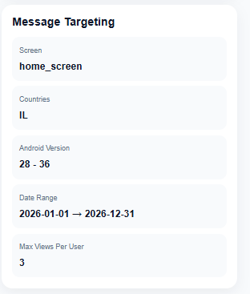
Screen, country, Android version, date range and max views.
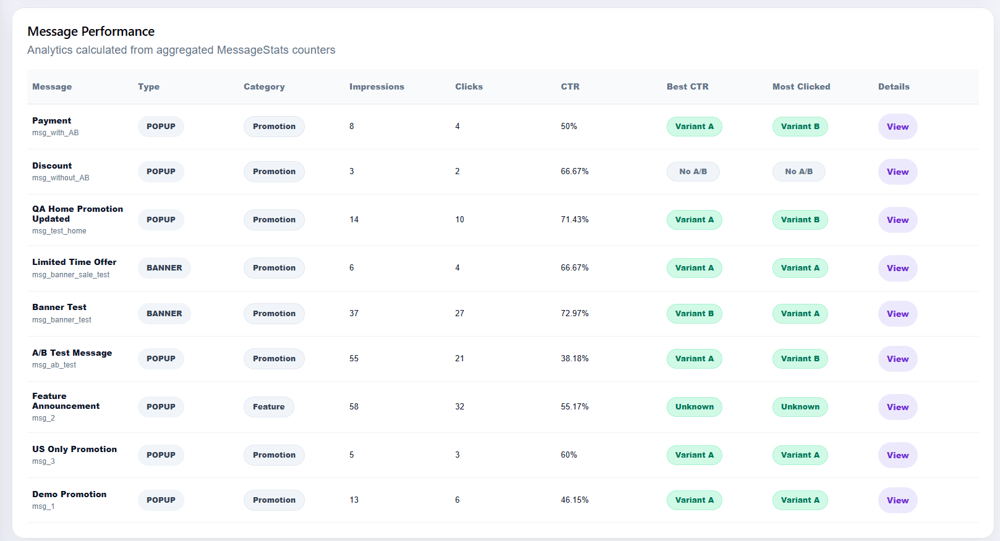
Aggregated results per message from MessageStats counters.
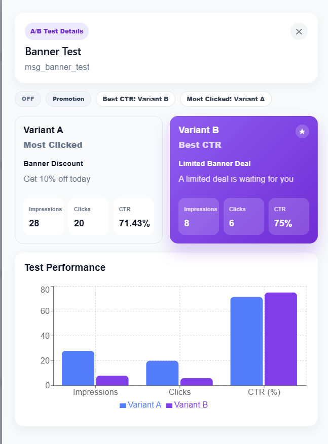
Compare impressions, clicks and CTR between Variant A and Variant B.
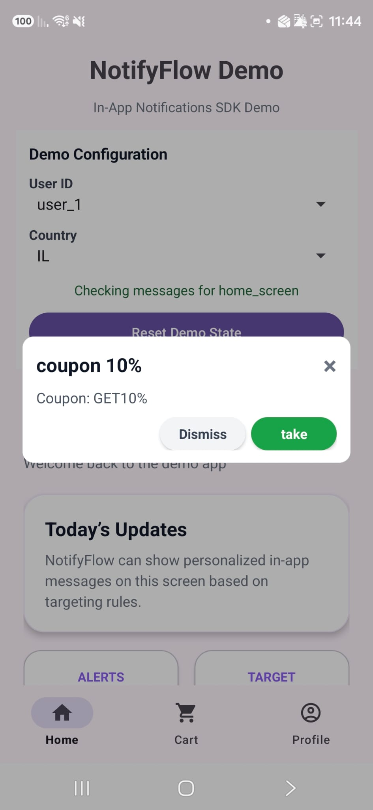
Popup notification displayed inside the Android demo app.
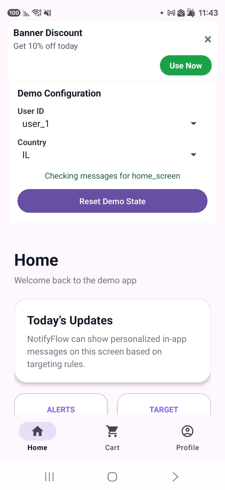
Banner notification displayed at the top of the Android screen.
The main features are divided between the Android SDK, Admin Portal and Backend.
NotifyFlow is integrated in this project as a local Android library module.
The NotifyFlow SDK module is located inside the Android project and is used directly by the demo app.
android/
├── app/
│ └── Android demo app
└── notifyflowlibrary/
└── NotifyFlow SDK module// settings.gradle.kts
include(":notifyflowlibrary")
// app/build.gradle.kts
dependencies {
implementation(project(":notifyflowlibrary"))
}The host app initializes NotifyFlow, fetches messages and checks each screen.
NotifyFlow.init(
context = this,
apiKey = "demo_api_key",
userId = "user_1",
country = "IL",
baseUrl = "https://your-backend-url.com/"
// androidVersion is optional and defaults to Build.VERSION.SDK_INT
)
NotifyFlow.fetchMessages()
NotifyFlow.checkAndShow(this, "home_screen")http://10.0.2.2:3000/ when running the backend locally with the Android Emulator.
For a real Android device, use your computer IP address, for example
http://<computer-ip>:3000/.
The Android version parameter is optional and defaults to the device SDK version.
| Demo Screen | Screen Key |
|---|---|
| Home | home_screen |
| Profile | profile_screen |
| Cart | cart_screen |
Short JSON examples of campaign messages, variants and analytics events used by NotifyFlow.
{
"id": "msg_new_offer",
"type": "POPUP",
"category": "PROMOTION",
"screenName": "home_screen",
"countries": ["IL"],
"maxViewsPerUser": 3
}{
"id": "msg_new_feature",
"type": "BANNER",
"category": "FEATURE_ANNOUNCEMENT",
"screenName": "profile_screen",
"countries": ["IL", "US"],
"maxViewsPerUser": 3
}{
"id": "msg_new_offer_var_a",
"name": "A",
"title": "20% Discount",
"body": "Get 20% off your next order",
"buttonText": "Buy Now"
}{
"messageId": "msg_new_offer",
"variantId": "msg_new_offer_var_a",
"userId": "user_1",
"country": "IL",
"eventType": "IMPRESSION"
}Internal SDK behavior handled automatically after integration.
| Functionality | Description |
|---|---|
| Message Filtering | Performs final local checks for screen, country, Android version, dates, max views and session rules after server-side filtering. |
| Max Views Per Message | Prevents repeated display after the user reaches the configured limit for each specific message. |
| Multiple Matching Messages | If several messages match the same screen, the SDK skips messages that already reached max views and continues to the next eligible message. |
| A/B Variant Selection | Selects a stable variant based on userId + messageId. |
| Impression Tracking | Sends an impression event when a message is displayed. |
| Click Tracking | Sends a click event when the user clicks the notification action. |
| Cache Fallback | Loads cached messages if the backend request fails. |
| Reset Views For Testing | Demo/testing helper used to reset local view counters and session state during QA. |
The SDK and portal communicate with the same backend, while data is stored in MongoDB Atlas.
flowchart LR
Admin[Admin User] --> Portal[React Admin Portal]
Portal --> Backend[Node.js / Express Backend]
AndroidApp[Android Demo App] --> SDK[NotifyFlow Android SDK]
SDK --> Backend
SDK --> Cache[(SharedPreferences Cache)]
Backend --> MongoDB[(MongoDB Atlas)]
MongoDB --> Users[(users)]
MongoDB --> Messages[(messages)]
MongoDB --> Stats[(messagestats)]
users collection is used only for admin portal authentication.
The Android SDK receives userId from the host app and does not access the users collection directly.
A Firebase Remote Config style flow: initialize, fetch, apply rules, display, report analytics.
sequenceDiagram
participant App as Android App
participant SDK as NotifyFlow SDK
participant API as Express Backend
participant DB as MongoDB
participant Portal as Admin Portal
App->>SDK: NotifyFlow.init(context, apiKey, userId, country, baseUrl)
App->>SDK: NotifyFlow.fetchMessages()
SDK->>SDK: Reuse Retrofit API client if baseUrl did not change
SDK->>API: GET /sdk/messages?apiKey&userId&country&androidVersion
API->>DB: Find active messages by country, Android version and date range
DB-->>API: Filtered messages
API-->>SDK: Messages JSON
SDK->>SDK: Save messages to cache
App->>SDK: NotifyFlow.checkAndShow(activity, screenName)
SDK->>SDK: Validate screen, country, Android version, dates, max views
SDK->>SDK: Select A/B variant if configured
SDK-->>App: Display POPUP or BANNER
SDK->>API: POST /sdk/events/impression
API->>DB: Increment MessageStats counters
App->>SDK: User clicks action button
SDK->>API: POST /sdk/events/click
API->>DB: Increment MessageStats counters
Portal->>API: GET /api/messages/:id/stats
API->>DB: Read aggregated MessageStats
DB-->>API: Stats
API-->>Portal: Analytics data
NotifyFlow reduces unnecessary network requests and filters messages as early as possible.
The SDK fetches messages on app start, when the SDK context changes, or when the app returns to the foreground. Screen navigation uses local checks only.
The backend filters messages by active status, country, Android version and campaign date range before returning them to the SDK.
The SDK reuses the same Retrofit API client while the base URL remains unchanged. If the base URL changes, a new client is created for the new backend.
Each campaign has a lifecycle from creation to display, analytics and expiration.
stateDiagram-v2
[*] --> Created
Created --> Active: Admin turns ON
Created --> Inactive: Admin keeps OFF
Active --> Eligible: Targeting rules match
Active --> NotEligible: Targeting rules do not match
Eligible --> Displayed: SDK shows popup/banner
Displayed --> ImpressionTracked: Impression sent
ImpressionTracked --> Clicked: User clicks action
ImpressionTracked --> Dismissed: User closes message
Clicked --> ClickTracked: Click sent
Dismissed --> SessionBlocked: Same screen already shown in session
ClickTracked --> SessionBlocked
Active --> Expired: End date passed
Active --> MaxViewsReached: User reached maxViewsPerUser for this message
Active --> Inactive: Admin turns OFF
Expired --> [*]
MaxViewsReached --> [*]
Inactive --> [*]
Main MongoDB collections and the relationship between messages, variants and aggregated stats.
| Collection | Purpose |
|---|---|
users |
Admin portal users. |
messages |
Notification campaigns, targeting rules and optional variants. |
messagestats |
Aggregated counters per message. |
erDiagram
USER {
string fullName
string email
string passwordHash
date createdAt
date updatedAt
}
MESSAGE {
string id
string projectId
string title
string body
string type
string category
string screenName
boolean active
string[] countries
number minAndroidVersion
number maxAndroidVersion
number maxViewsPerUser
string startDate
string endDate
embedded variants
}
MESSAGE_VARIANT {
string id
string name
string title
string body
string buttonText
}
MESSAGE_STATS {
string messageId
number impressions
number clicks
map byCountry
map byVariant
date createdAt
date updatedAt
}
MESSAGE ||--o{ MESSAGE_VARIANT : contains
MESSAGE ||--|| MESSAGE_STATS : has
Analytics are read from aggregated counters instead of scanning raw events.
Every impression or click updates a MessageStats document.
The dashboard reads ready counters directly from MongoDB: impressions, clicks, CTR, by-country data and by-variant data.
flowchart LR
Event[Impression / Click Event] --> Backend[Backend API]
Backend --> UpdateStats[Update MessageStats Counters]
UpdateStats --> MongoDB[(MongoDB)]
Portal[Analytics Dashboard] --> ReadStats[Read Aggregated Stats]
ReadStats --> MongoDB
A/B Testing is optional per message and compares Variant A and Variant B.
The SDK uses the regular message title, body and default button text.
The SDK selects a stable variant using userId + messageId and tracks analytics per variant.
Main SDK and portal endpoints used by NotifyFlow.
| Method | Endpoint | Description |
|---|---|---|
| GET | /sdk/messages |
Loads server-filtered messages for the SDK. |
| POST | /sdk/events/impression |
Reports an impression. |
| POST | /sdk/events/click |
Reports a click. |
/sdk/messages endpoint filters messages by active status, country,
Android version and campaign date range before returning them to the Android SDK.
The portal /api/messages endpoint still returns all campaigns so admins can manage
active, inactive, scheduled and expired messages.
| Method | Endpoint | Description |
|---|---|---|
| GET | /api/messages |
Get all messages. |
| POST | /api/messages |
Create a new message. |
| PUT | /api/messages/:id |
Update an existing message. |
| DELETE | /api/messages/:id |
Delete a message. |
| GET | /api/messages/:id/stats |
Get analytics stats for a message. |
| POST | /api/auth/register |
Register an admin user. |
| POST | /api/auth/login |
Login an admin user. |
Run the backend, portal and Android demo app locally.
cd backend
npm install
node server.jsOptional health check: http://localhost:3000/health
cd portal
npm install
npm run devOpen the local Vite development URL shown in the terminal.
The portal connects to the backend API at:
http://localhost:3000
Open the Android project in Android Studio and update the demo base URL according to the environment. The SDK recreates its Retrofit client automatically when the base URL changes.
http://10.0.2.2:3000/http://<computer-ip>:3000/